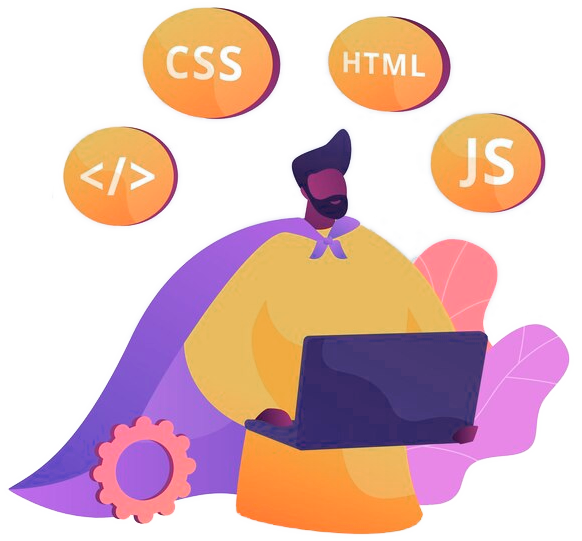

Sobre mi
Soy Técnico profesional, autodidacta, metódico, responsable y proactivo con más de cuatro (4) años de experiencia laboral en diseño, maquetación y desarrollo web.
- Conocimientos avanzados: HTML, XML, CSS, SASS, Javascript, Node, PHP.;
- Conocimientos en desarrollo: Python, Desarrollo Odoo;
- Conocimientos generales: Laravel, React, Docker, PM2, MySQL, SQLite, MongoDB.
- Habilidades blandas: comunicación asertiva, liderazgo, trabajo en equipo, capacidad analítica, resolución de problemas, autodidacta, adaptabilidad.
Si estas interesado en contratar a un desarrollador web, bien sea para front-end o full
stack, puedo ayudarte a ti y a tu equipo a cumplir sus objetivos ofreciendo soluciones
efectivas y escalables desarrollando proyectos que permitan un manejo eficiente de la
información y cumplan con los objetivos solicitados, todo esto bajo el marco del compromiso,
el respeto y la comunicación.
Resumen profesional